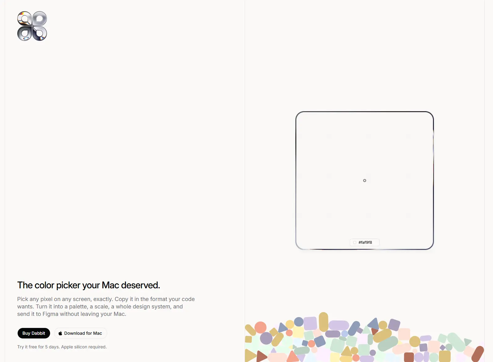

Dabbit
- Сервисы и приложения
- Продуктивность
- Минимализм
- Игривый
- Сайт жив

Что это
Dabbit — лендинг приложения для macOS: пипетка с пиксельной точностью и управлением цветом, разовая покупка от 19 долларов, продажи через сторонний платёжный сервис, плюс парный плагин для Figma. Собран на Astro с островками React, Tailwind, GSAP со ScrollTrigger, физикой Matter.js, двумерным канвасом и шейдерами на WebGL2. Главная особенность — плавающая лупа: один элемент размером 440 пикселей, который скрипт ведёт по ключевым точкам страницы при скролле, а внутри показывает увеличенный фрагмент канваса или синтезированную копию разметки с HEX-читалкой внизу. Звуки интерфейса синтезируются на лету через Web Audio, без единого аудиофайла. Светлый живой сайт пипетки для Mac. При скролле по экрану плывёт лупа, которая увеличивает всё, что под ней, и показывает HEX-коды цветов.
Чем интересен
- Лупа — не картинка и не CSS-трюк: под ней три разных способа взять цвет. Для сцены с физикой цвет берётся точно, через запрос точки в движке тел; для чужого холста — чтение одного пикселя; а для обычной разметки сайт перерисовывает её на скрытый холст с границами, радиусами и посимвольными позициями текста и проверяет, попал ли пиксель в глиф, по значению альфа-канала.
- Лупа плывёт именно от скролла, а не за курсором: путь — массив точек привязки с координатами и масштабом, позиция скролла сглаживается линейной интерполяцией, а между точками работает сглаживание по кривой; при этом кратность увеличения постоянна — 440 пикселей лупы на 281 пиксель выборки, то есть примерно полтора раза.
- Конфетти — настоящая физика, а не CSS-анимация: движок со сном тел, гравитация, статические стены, спавн за левым краем; цвета тел читаются из дизайн-токенов, поэтому картинка перекрашивается вместе со сменой темы, а при включённом «уменьшении движения» симуляция молча прогоняется на триста шагов вперёд вместо анимации.
- Окантовка лупы — не рамка CSS, а маска из SVG-файла, залитая шейдером WebGL2 с униформами контура, искажения и цветовых сдвигов; на устройствах с грубым указателем этот слой скрыт.
- Звук интерфейса синтезируется на лету — осцилляторы, вейвшейпер, полосовой фильтр и процедурный реверб, — без единого аудиофайла; используются урезанные наборы разных авторов.
- Машиночитаемая гигиена на высоте: robots прямо объясняет, что вся документация доступна в Markdown и есть индекс для языковых моделей, лента обновлений приложения лежит на том же домене, а карта сайта — это индекс на 22 адреса.
Паспорт
- Домен
- dabbit.app
- Тип сайта
- Лендинг
- Категории
- Сервисы и приложения
- Подкатегории
- Продуктивность
- Для кого
- Дизайнерам, Разработчикам, Обычным пользователям
- Стиль
- Минимализм, Игривый
- Язык
- Английский
- Страна
- не указано
- Автор
- Майкл Андреуцца (Michael Andreuzza)
- Год
- 2026
- Добавлен в коллекцию
- 05.10.2026
Палитра
-
#FBF9F7— 95% кадра -
#D0D7D8— 2% кадра -
#A3A3B4— 1% кадра -
#DFC381— 1% кадра -
#828185— 0% кадра
- Режим
- Светлая
- Цвет фона
- Нейтральный
Технические факты
- HTTPS
- да
- Meta viewport
- да
- Title
- Dabbit — The color picker your Mac deserved. (44 симв.)
- Description
- Dabbit is a pixel-exact, color-managed color picker for macOS. Pick anywhere on screen, copy in any format, build palettes and design systems, and send them straight to Figma. (175 симв.)
- Open Graph
- да
- Структурированные данные
- да
- Sitemap
- есть индекс /sitemap-index.xml на 22 адреса; привычный /sitemap.xml отвечает 404, но он и не заявлен
- Robots
- Allow: / с пояснением про Markdown-версии документации и указанием карты сайта; Cloudflare добавляет свой блок сигналов о контенте
- Аналитика
- Kobbe (app.kobbe.io) — единственный счётчик, с атрибуцией кампаний и выручки
- Проверено ссылок
- 39
- Битые ссылки
- нет
- Контакты
- почта hello (at) dabbit.app с намеренным искажением — только на страницах поддержки, условий и приватности; в подвале почты нет, есть ссылка на сайт автора
- Юридическая информация
- отдельные страницы условий, политики и возвратов с датами обновления; лицензия разовая — 19, 29 или 35 долларов за одну, две или три машины, двенадцать месяцев релизов включены, продление 10 долларов по желанию, пробный период пять дней, возврат в течение четырнадцати дней; продавец записи — внешний платёжный сервис; юрлицо, адрес и регистрационный номер не указаны
Технологии с доказательствами
- Astro — тег generator с версией, хешированные пути ассетов, семнадцать элементов-островов, обработчики смены страницы и собственный модуль предзагрузки ссылок
- React в островах — подключение клиентского рендерера и библиотеки React, в компоненте цены реально используются useState и useEffect и слушается событие смены тарифа
- Base UI — атрибуты popover-триггера и сгенерированный идентификатор у кнопки меню
- Tailwind CSS — баннер версии в собранных стилях, сотни переменных префикса tw, слои темы и кастомные варианты вроде pointer-fine и motion-reduce
- GSAP 3.15.0 — отдельный модуль библиотеки со строкой версии, таймлайны, тикер, matchMedia и разбор кривых
- GSAP ScrollTrigger — встроен в модуль сцены: регистрация плагина, пересборка по событию refresh, отключение восстановления позиции скролла браузером
- Matter.js — встроен в модуль фигур: создание движка со сном тел, шаг 1000/60, прямоугольные и круглые тела, запрос точки, гравитация по вертикали
- Canvas 2D — пять холстов на главной, отключённое сглаживание при масштабировании, drawImage, roundRect, чтение пикселей и подписка на изменение размеров
- Шейдеры WebGL2 — модуль логотипа-марки с кодом GLSL версии 300 es, компиляцией программ и униформами контура, искажения, мягкости и цветовых сдвигов
- Web Audio — модуль звуков: контекст с настройкой задержки, осцилляторы, усиление, вейвшейпер по гиперболическому тангенсу, полосовой фильтр и свёрточный реверб, сгенерированный процедурно
- Звуковые паки Raphael Salaja — в том же модуле перечислены наборы Mechanical, Minimal, Core и Crisp с версиями; на сайте играют переключение таба, конфетти, щелчок и переключение темы
- Shiki — переменные подсветки кода в стилях, включая тёмную тему
- Cloudflare — заголовки сервера и идентификатор запроса, поддержка HTTP/3
- Polar как продавец — ссылки покупки перенаправляют на внешний чекаут, кабинет покупателя — на портал этого сервиса; в условиях сервис назван продавцом записи
- Sparkle — лента обновлений приложения на том же домене с версией, минимальной версией системы и ссылкой на примечания к релизу
- Inter самохостом — правило @font-face с вариативным файлом и предзагрузкой; моноширинный шрифт системный
- Чего нет — ни Next, ни Nuxt, ни Vue, ни Svelte, ни Webflow, ни Framer, ни Tilda, ни WordPress, ни Lenis, ни three.js, ни Lottie, ни Rive — ноль совпадений
- Аналитика — единственный счётчик — Kobbe с атрибуцией кампаний и выручки; Google Analytics, Tag Manager, Plausible, Meta и Hotjar не найдены
Что смотреть в первую очередь
Смотреть ради лупы: это единственный известный в коллекции случай, когда приём держится на трёх разных способах выборки цвета — точный запрос в физическом движке, чтение пикселя и синтез разметки на скрытом холсте с посимвольным разбором текста.
Похожие в коллекции
- WeekSync — общее: Сервисы и приложения, Минимализм, Игривый, Скроллителлинг, Звук, Микроанимации
- Flect — общее: Минимализм, Игривый, Скроллителлинг, Микроанимации, Генеративная графика
- Ploy — общее: Сервисы и приложения, Игривый, Минимализм, Микроанимации, Скроллителлинг
- Dia — общее: Сервисы и приложения, Минимализм, Скроллителлинг, Микроанимации